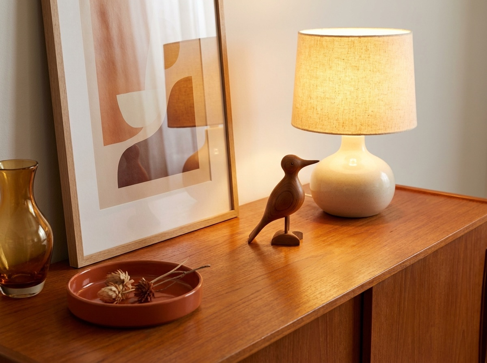

How the shop works
Come in, take your time, ask questions.
The best way to know what's here is to stop by. Pieces are arranged so you can see them in a room rather than stacked in a pile. If something catches your eye, ask. Judy knows where it came from and what it is.
- Browse the current furniture, lighting and art in person.
- Ask about a piece you saw on Instagram or Chairish.
- Call ahead to check a piece is still available.